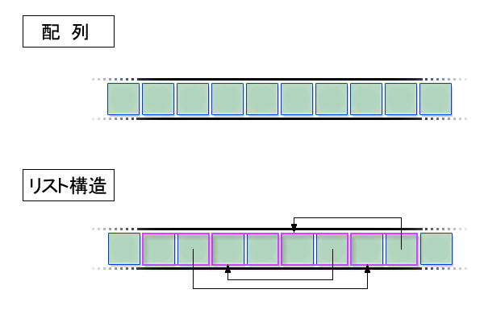

前章で作成したスケジュール管理のプログラムでは、複数のデータをまとめて管理するために構造体を使いました。1 つの予定を表す構造体を宣言し、さらに構造体の配列を用いることで、複数の予定を扱えるようになりました。しかし前章の最後でもふれましたが、構造体型の変数のメンバの値を変更する計算を、別な関数にすることは容易ではありません。構造体を関数に引数として渡し、その関数の中で構造体のメンバの値をいくら変更しても、元の構造体型の変数の値は変わらないからです。このような計算をおこないたいときは、構造体のポインタを関数に引数として渡す必要があります。構造体をさすポインタ
構造体をさすポインタといっても、int 型の変数をさすポインタと使い方は同じです。int 型の変数をさすポインタ型はint*と、データ型の名前の後ろに*をつけるだけでした。構造体も同じです。また、単項演算子であるアドレス演算子 & を変数の前に書くと、その演算子の計算結果は、その変数をさすポインタとなりました。これは変数が構造体型の変数でも同じです。struct 《構造体名》* 《ポインタ名》 = & 《別な変数の名前》;これが構造体をさすポインタ型の変数の宣言です。構造体型は int 型などと異なり、struct と構造体名の 2 語で 1 つの名前であることを思い出して下さい。ポインタがさす構造体のメンバの値を読み出したり、新しい値をメンバに代入するときは、. （ドット）ではなく -> という演算子を使います。《構造体》.《メンバ名》 /* 構造体のメンバ */
《構造体をさすポインタ》->《メンバ名》 /* ポインタがさす構造体のメンバ */構造体をさすポインタを使った実際のプログラム例（一部）を示します。struct schedule exam;
struct schedule* p = &exam;
/* 「2008/09/02 13:00 前期筆記試験」という予定を作成する */
p->year = 2008;
p->month = 9;
p->day = 2;
p->hour = 13;
strcpy(p->title, "前期筆記試験");変数 p の値は exam をさすポインタです。したがって各メンバに代入された値は exam のメンバに反映されます。このプログラムは、ポインタを使わずに下のように素直に書いても、計算結果は同じです。struct schedule exam;
/* 「2008/09/02 13:00 前期筆記試験」という予定を作成する */
exam.year = 2008;
exam.month = 9;
exam.day = 2;
exam.hour = 13;
strcpy(exam.title, "前期筆記試験");ポインタがさす構造体のメンバを変更する関数
構造体をさすポインタを使った例として、前章で示したプログラムを正しく動くように修正します。構造体のメンバの値を変更する計算を update2years という関数にする、という例でした。#include <stdio.h>
#include <string.h>
struct schedule {
int year; /* 年 */
int month; /* 月 */
int day; /* 日 */
int hour; /* 時 */
char title[100]; /* 表題 */
};
/* スケジュールの年を強制的に2年進める */
void update2years(struct schedule* target) {
target->year = target->year + 2;
}
/* 構造体 schedule の全メンバを表示する */
void printSchedule(struct schedule data) {
printf("year:%04d, month:%02d day:%02d hour:%02d title:%s\n",
data.year, data.month, data.day, data.hour, data.title);
}
int main() {
struct schedule exam;
/* 「2006/10/30 10:00 ハロウィン」という予定を作成する */
exam.year = 2006;
exam.month = 10;
exam.day = 30;
exam.hour = 10;
strcpy(exam.title, "ハロウィン");
printSchedule(exam);
/* 構造体 exam のメンバの値を変更する */
update2years(&exam);
printSchedule(exam);
return 0;
}今度は正しく変数 exam のメンバの値が変わります。2006/10/30 10:00 ハロウィン
2008/10/30 10:00 ハロウィン今回は想定どおり、2 年進んだ年が表示されました。変更点は以下の 3 点です。
- 13 行目: update2years 関数の引数のデータ型を構造体をさすポインタ型に変更した
- 14 行目: ポインタがさす構造体のメンバを参照する部分で -> を利用した
- 33 行目: update2years 関数を呼び出すとき、変数 exam の前にアドレス演算子 & を追加した
関数の引数に int 型の変数をさすポインタを渡した場合と同様、構造体をさすポインタを引数に渡す場合にも、変数の前にアドレス演算子が必要になります。
構造体を渡すならポインタで
int 型の変数の値を関数の引数として渡すと、その int 型の値が 1 つ引数として渡されます。一方、構造体を関数の引数として渡すと、構造体に含まれる個々のメンバの値が全て渡されます。このため、構造体に含まれるメンバの数が多いと、1 個の引数を渡しているように見えて、実際は多数の値が関数に渡されることになります。これは代入の場合も同じです。例えば schedule 構造体の値を別な変数に代入すると、int 型の値の代入に比べ、5 つのメンバの値が代入されますから、おおよそ 5 倍の計算が必要です（実際には単純に 5 倍というわけではありません）。int value1, value2;
struct schedule exam1, exam2;
...
value2 = value1;
exam2 = exam1; /* value2 への代入に比べたくさんの計算が必要 */一方、構造体をさすポインタを 1 つ関数の引数として渡すと、これは本当にポインタの値が 1 つ渡されるだけです。ポインタの実体はメモリのアドレスですが、これは一般的なコンピュータでは int 型の値と同じただの整数です（あるいは倍の桁数の整数）。構造体の値をそのまま引数にする場合と比べ、構造体をさすポインタを引数にする方が、少しばかり計算が高速になります。C言語でプログラムを書くときは、プログラムの実行速度を少しでも速くしたい場合がほとんどですから、その必要がなくても、構造体を関数に渡すときは、構造体をさすポインタを渡す方法が好まれるようです。例えば上のプログラムでも、printSchedule 関数の引数は構造体ですが、あえて構造体をさすポインタを引数にする方がふつうです。
構造体のポインタを使って構造体の中身を変更できるようになり、スケジュール管理プログラムも完成に近づいてきました。 しかし、まだ便利なプログラムにはなってはいません。まず「スケジュールの件数が最大 100 件と固定になっている」点が不便です。また「入力したスケジュールを日時が古い順に並べて表示する」という機能も実装されていません。リスト構造
最初にスケジュールの件数が最大 100 件と固定になっている点を解決します。これまで構造体の配列を使ってきましたが、配列の要素数は固定です。これがスケジュールの件数が最大 100 件になっている理由でした。そこで「リスト構造」（あるいはリンクド・リスト: linked list）と呼ばれる少し複雑なデータ構造を用いることにします。リスト構造は、スケジュール管理の例のように個数を固定できない多数のデータを効率よく管理するときに、よく利用されます。 特に、プログラムの実行途中に要素の総数が増えたり減ったりするような場合に向いています。
ポインタを含む構造体
配列の場合、単純に先頭から何番目であるか、で各要素を区別していました。リスト構造の場合は各要素の中に次の要素をさすポインタの値を含めます。このポインタを先頭から何回たどった先の要素であるか、で各要素を区別します。したがって、リスト構造に含まれる各要素は必然的に構造体になります。構造体の 1 つのメンバは、その要素の値、もう 1 つのメンバは次の要素（の構造体）をさすポインタです。
ポインタでつながっているリスト構造の各要素
リスト構造の場合、i 番目の要素にたどりつくためには、先頭から i 回ポインタをたどらなければなりません。したがって i 番目の要素の値を参照すると、配列の場合より計算時間が長くかかります。一方、i 番目と i + 1 番目の要素の間に、新しい要素を挿入することは、短い計算で終わります。単に i 番目の要素のポインタの値を変更して、新しい要素をさすようにするだけだからです。配列の場合、i + 1 番目以降の要素を順に 1 つずつずらさなければなりません。またリスト構造では、要素の削除も高速です。メモリを確保する・解放する
変数を宣言すると、コンパイラが自動的にその変数の値を保存するメモリ領域を確保します。しかしながら、それだけでは宣言した変数の個数分しか値を保存できません。配列を宣言すると、多数の要素（つまり変数）を一括して宣言できますが、決まった個数の変数を宣言することは変わりありません。多めに変数を用意しておいて必要な個数だけ使う、という方法もありますが、無駄に大量のメモリを備えたコンピュータでしか動かないプログラムになってしまいます。この問題を解決するには、malloc 関数を呼んで明示的にメモリ領域を確保し、そこを変数に見たてて利用しなければなりません。malloc 関数は、printf 関数のようにC言語に標準的に元々用意されている関数です。malloc 関数がメモリの割り当てを担当する領域のことを、しばしばヒープ領域とよびます。この malloc 関数は、引数として、確保したいメモリ領域の大きさを byte 単位で受け取り、その大きさのメモリ領域を実際に確保します。そして確保したメモリ領域の先頭アドレスをポインタ型の値として返します。これが malloc 関数の戻り値です。malloc 関数を呼び出した側は、戻り値として返されたポインタを使って、そのメモリ領域を変数と見なして値を保存したり、読み出したりします。malloc 関数と対になって使われる関数に free 関数があります。この関数は malloc 関数の戻り値のポインタを引数として受け取ります。そしてそのポインタがさすメモリ領域を解放して、次にまた malloc 関数が呼ばれたときに、その領域を再利用できるようにします。プログラムは、malloc 関数を何度も呼ぶ一方、まったく free 関数を呼ばないことも可能です。しかし、free 関数を呼ばないと、メモリ領域は確保されるばかりでいつかは枯渇し、それ以上いくら malloc 関数を呼んでもメモリを確保できなくなってしまいます。不要になったメモリ領域は free 関数でこまめに解放した方がよいのです。free 関数でメモリ領域を解放すると、次に malloc 関数が呼ばれてメモリ領域の確保が要求されたときに、大きさが合えば、その解放したメモリ領域が新しく確保されたメモリ領域として使われることがあります。malloc 関数と free 関数を使うためには、プログラムの冒頭に#include <stdlib.h>と書く必要があります。以下に具体的なプログラム例を示します。#include <stdio.h>
#include <stdlib.h>
int main() {
int number;
printf("要素数を入力してください\n");
scanf("%d", &number);
printf("%d個の要素をもつ配列相当の領域を確保します\n", number);
/* int 型で number 個分の領域を確保します */
int* array = (int*)malloc(sizeof(int) * number);
array[0] = 1;
for (int i = 1; i < number; i = i + 1) {
array[i] = array[i - 1] * 2
}
for (int i = number - 1; i >= 0; i = i - 1) {
printf("%d\n", array[i]);
}
/* 使わなくなった領域を開放します */
free(array);
return 0;
}実行結果は次のようになります。最初の質問に対して 10 と入力したとします。なお本来は、最初に要素数が入力された後、入力された値が負であるか検査し、負である場合はエラーとして実行を終了すべきです。上のプログラムでは簡単のためこの検査を省略しています。要素数を入力してください
10
10個の要素を持つ配列相当の領域を確保します
512
256
128
64
32
16
8
4
2
113 行目の malloc 関数の呼び出しにより、最初の質問の答えの数（例では 10）の個数の要素をもつ配列に必要なメモリ領域が確保されます。その後は、確保した領域を配列と見なして計算が進みます。13 行目の malloc 関数の呼び出しの戻り値は、確保されたメモリ領域をさすポインタで、変数 array の値となります。13 行目以降では、まるで配列 array が普通に宣言されたかのように使われているのがわかります。なお、確保されたメモリ領域は 25 行目の free 関数の呼び出しによって解放されます。free 関数の呼び出しの引数が array であることに注意してください。この malloc 関数の呼び出しは次のような少し複雑な形をしています。int* array = (int*)malloc(sizeof(int) * number);malloc への関数呼び出しの引数sizeof(int) * numberは、配列用に確保するメモリ領域の大きさを計算する式です。詳細は後ほど改めて説明します。malloc の左側の(int*)はキャスト演算といいます。malloc 関数の戻り値の型はvoid*という少し特殊なポインタ型なので、これをキャスト演算によって、int*すなわち int 型の変数をさすポインタ型に変換します。malloc 関数によって確保されたメモリ領域をさすポインタを、どのような型の変数や配列をさすポインタとして使いたいかによって、malloc の左側の括弧内に書く型を変えます。もちろんこの型は、変数 array の型と一致していなければなりません。array の型がint*なら、キャスト演算の括弧内にもint*と書きます。変数 array の型がdouble*なら、括弧内にもdouble*と書きます。malloc 関数の戻り値のポインタは、キャスト演算をほどこして適当な型に変換した後、あたかもそのポインタが普通に宣言された変数や配列をさしているかの様に扱うことができます。上のプログラムでも、変数 array の値は int 型の変数をさすポインタです（型がint*なので）から、変数 array がさす int 型の変数があるとみなして、その変数の値を読み出したり、新しい値を代入したりすることができます。実際には、変数 array がさす int 型の変数は明示的に宣言された普通の変数ではありません。malloc 関数により必要なメモリ領域だけ確保して、あたかもコンパイラがそこに割り付けたと見なしているだけの（架空の？）変数です。ところが上のプログラムをよく見ると、変数 array は int 型の配列名のように扱われています。これは、C言語の規則では、int 型の変数をさすポインタは、int 型の要素をもつ配列名であるかのように扱えるからです。このため変数 array は、13 行目の malloc 関数の呼び出し以降、まるで配列名であるかのように扱われています。例えば array[0] や array[i] という式があります。sizeof 演算子
malloc 関数を使ってメモリ領域を確保し、そこを変数や配列と見なして使うときは、確保したメモリ領域がその変数や配列に必要な十分な大きさをもつことが必要です。メモリ領域の大きさが不足すると、ポインタを通して値をそこへ代入したときに、他の変数や配列用に使われているメモリ領域にはみだして値が保存されてしまう可能性があります。そうなると、プログラムを実行したときに、実際にどのような計算がおこなわれるのか、まったく予想がつかなくなります。正しい大きさのメモリ領域を確保するためには、それぞれの型の変数や配列がどれだけの量のメモリ領域を必要とするか正しく計算しなければなりません。ところが int 型や double 型の変数が実際にどれだけのメモリ領域を必要とするかは、コンピュータやオペレーティングシステムごとにまちまちです。C言語の標準仕様では決まっていません。そこで sizeof 演算子を使って計算します。sizeof(《データ型》)
sizeof(《変数名》)この演算子は、括弧内に書かれた変数や配列、データ型に必要なメモリ領域の大きさを計算します。計算するといっても、コンパイルする時にあらかじめ計算しておくので、プログラムを実行する度に再計算することはありません。プログラム例を示します。#include <stdio.h>
struct schedule {
int year; /* 年 */
int month; /* 月 */
int day; /* 日 */
int hour; /* 時 */
char title[100]; /* 表題 */
};
int main() {
int array[10];
printf("intの大きさ = %d\n", sizeof(int));
printf("array[10]の大きさ = %d\n", sizeof(array));
printf("scheduleの大きさ = %d\n", sizeof(struct schedule));
return 0;
}このプログラムは sizeof 演算子を使って、色々なデータ型の大きさを計算し、表示します。intの大きさ = 4
array[10]の大きさ = 40
scheduleの大きさ = 116このことから sizeof(int) の値が 4、sizeof(array) の値が 40 であることがわかります。int 型の配列の場合、要素 1 個あたり 4 bytes 必要で、要素数が 10 なら全体で 40 bytes 必要なことがわかります。先の malloc 関数の呼び出しは次のような形でしたが、以上から、引数は int 型の要素を number 個もつ配列に必要なメモリ領域の大きさを計算していたことがわかります。int* array = (int*)malloc(sizeof(int) * number);C言語でリスト構造を実現する
ここまでに説明した機能を使ってリスト構造を実装します。リストの要素は構造体 schedule です。そこで、まずは構造体 schedule の定義を変更して、次の要素（それも構造体 schedule です）をさすポインタをメンバに含めます。struct schedule {
int year; /* 年 */
int month; /* 月 */
int day; /* 日 */
int hour; /* 時 */
char title[100]; /* 表題 */
struct schedule* next; /* 次の要素 */
};メンバ next が次の要素をさすポインタです。データ型は struct schedule* です。このメンバの値に新しいポインタの値を代入することで、この構造体の次を自由に変えることができます。次に、空の要素を malloc 関数を使って確保し、リストの末尾に追加する list_add 関数を示します。#include <stdio.h>
#include <stdlib.h>
#include <string.h>
struct schedule {
int year; /* 年 */
int month; /* 月 */
int day; /* 日 */
int hour; /* 時 */
char title[100]; /* 表題 */
struct schedule* next; /* 次の要素 */
};
/* リストに要素を追加する */
struct schedule* list_add(struct schedule* list,
int y, int m, int d, int h, char t[]) {
/* 新しい要素を作成 */
struct schedule* node = (struct schedule*)malloc(sizeof(struct schedule));
node->year = y;
node->month = m;
node->day = d;
node->hour = h;
strcpy(node->title, t);
/* 次の要素がないことを示すために NULL を代入 */
node->next = NULL;
if (list == NULL) {
/* リストが空の場合は特別扱いする */
return node;
}
else {
/* リストの末尾の要素を探す */
struct schedule* p = list;
while (p->next != NULL) {
p = p->next;
}
/* ここで変数 p は末尾の要素をさす */
p->next = node;
return list;
}
}
int main() {
struct schedule* list = NULL;
list = list_add(list, 2009, 1, 1, 0, "元旦");
list = list_add(list, 2009, 12, 24, 0, "Xmas");
printf("%d/%d/%d %d:00 %s\n",
list->year, list->month, list->day, list->hour, list->title);
printf("%d/%d/%d %d:00 %s\n",
list->next->year, list->next->month, list->next->day,
list->next->hour, list->next->title);
return 0;
}関数 list_add は、既存のリストの先頭をさすポインタを受け取り、新しい要素を末尾に追加し、リストの先頭の要素をさすポインタを戻り値として返します。新しい要素の各 メンバの値も引数として受け取ります。最後の引数 t は表題で文字列なので、データ型は char[] です。C言語の配列名と配列の先頭要素をさすポインタを同一視する規則から、t のデータ型を次のように char* としても上のプログラムは正しく動きます。
struct schedule* list_add(struct schedule* list,
int y, int m, int d, int h, char* t) {最初、リストは空（要素が 0 個）ですから、先頭要素をさすポインタとして NULL を使います。NULL は特別なポインタ値を表す定数で、「どの変数や配列もさしていない」ポインタを意味します。main 関数の最初でポインタ型の変数 list を宣言していますが、初期値が NULL になっています。main 関数はその後 list_add を 2 回呼んで予定を 2 個リストに追加します。その後、リストの先頭要素と 2 番目の要素の内容を表示します。
main 関数の中で、list_add 関数の戻り値を変数 list に代入していることに注意してください。1 回目の呼び出しでは、引数として渡される list の値は NULL ですが、戻り値は NULL ではありません。新しく先頭に追加された要素をさすポインタです。2 回目の呼び出しでは、引数の値がそのまま戻り値となります。戻り値を変数 list に代入することに厳密には意味はありません。しかし、こうしておけば、1 回目と 2 回目の呼び出しを行ごと入れ替えても、プログラムは正しく動きます。
main 関数の最後の printf 関数の呼び出しの引数は、list->next->year などとなっています。これはポインタ型の変数 list がさす構造体の next メンバ（これもポインタ型です）がさす構造体の year メンバの値、という意味です。つまり (list->next)->year と読むのです。括弧内は、year メンバの値を知りたい構造体をさすポインタ値です。この値をどのように得るかというと、括弧内が list->next ですから、変数 list がさす構造体の next メンバの値、ということになります。next メンバの型は struct schedule* ですから、確かに値はポインタです。変数 list の値はリストの先頭要素をさすポインタですから、結局、list->next->year は、先頭から 2 番目の要素の year メンバの値、となります。
さて list_add 関数は、まず malloc 関数を呼んで新しく追加する要素のためのメモリ領域を確保します。sizeof(struct schedule) は、schedule 構造体の大きさを表します。sizeof(struct schedule*) では構造体をさすポインタ型の変数の大きさになりますから注意してください。
malloc 関数で新しく作成した構造体をさすポインタは node の値となります。この構造体の next メンバには NULL を代入することにします。後で、この構造体の次の要素の有無を判定するのに使います。NULL は「何もさしていない」ポインタのことでした。値が NULL のときは、次の要素はなし、とします。
次に、この構造体をリストの末尾に連結します。そのためには、まず既存のリストの末尾の要素（これも schedule 構造体です）を探します。まず先頭の要素をさすポインタを変数 p の値とし、while 文で p がさす構造体の next メンバを次々にたどりながら、変数 p の値を更新してゆきます。p->next の値が NULL になったら、p は末尾の要素をさしています（next メンバの値が NULL のときは次の要素はなしと決めました）。したがって、その p がさす構造体の next メンバに変数 node の値を代入すれば、連結が完了します。変数 node の値は、新しく末尾となる構造体をさすポインタです。この値を代入すれば、next メンバの値も新しく末尾となる構造体をさすポインタになります。これまで末尾だった構造体の次の要素が、新しく追加された構造体となり、目的が達せられた のがわかるでしょうか。list_add 関数は引数 list の値が NULL のときは、特別な計算をしなければなりません。list の値が NULL ということは、新しく作成した構造体を追加する先のリストは空だということです。新しく作成した構造体が先頭ですから、単に、この構造体をさすポインタを list_add 関数の戻り値として返します。引数 list の値が NULL のときも、list の値を変数 p の値とし、while 文の実行を始めると、プログラムは異常動作をおこします。p->next を計算しようとしますが、変数 p はどこもさしていないからです。日付順に追加する
上で示した list_add 関数は、新しい予定をリストの末尾に追加しました。日付順に予定を表示することを考えると、新しい予定を追加するときは、全ての予定が常に日付順に並ぶよ うに、リストの途中に挿入する方が望ましいといえます。そこで、リストの途中に挿入をおこなうように list_add 関数を修正することにします。挿入の結果、リストの要素は常に日付が早い順に並ぶこととします。まず先のプログラムに次の関数 before を追加します。この関数は schedule 構造体をさすポインタを 2 つ引数として受け取り、日付を比較します。戻り値として、第 1 引数 a の方が第 2 引数 b より日付が前であるときは 1 を、そうでないときは 0 を返します。int before(struct schedule* a, struct schedule* b) {
if (a->year < b->year) {
return 1;
}
else if (a->year == b->year) {
if (a->month < b->month) {
return 1;
}
else if (a->month == b->month) {
if (a->day < b->day) {
return 1;
}
else if (a->day == b->day) {
if (a->hour < b->hour) {
return 1;
}
}
}
}
return 0;
}次にこの before 関数を用いて list_add 関数を修正します。struct schedule* list_add(struct schedule* list, int y, int m, int d, int h, char t[]) {
/* 新しい要素を作成 */
struct schedule* node = (struct schedule*)malloc(sizeof(struct schedule));
node->year = y;
node->month = m;
node->day = d;
node->hour = h;
strcpy(node->title, t);
if (list == NULL) {
/* リストが空の場合は特別扱いする */
node->next = NULL;
return node;
}
else if (before(node, list) == 1) {
/* 新しい要素が日付順でもっとも早い */
node->next = list;
return node;
}
else {
/* 挿入位置を決める */
struct schedule* p = list;
while (p->next != NULL && before(node, p->next) == 0) {
p = p->next;
}
/* 新しい要素は変数 p がさす要素の直後に挿入 */
struct schedule* n = p->next;
p->next = node;
node->next = n;
return list;
}
}最初の方は同じです。引数 list として渡されたリストが空の場合の特別扱いも同じです。異なるのは、それ以外の場合です。まず、新しく作った要素が日付順でもっとも早く、リストの先頭に挿入される場合も、特別扱いが必要です。新しく作った要素は変数 node がさす構造体ですから、それまでの先頭要素をこの構造体の次の要素とし、node の値を list_add 関数の戻り値とします。新しく作った要素がリストの現在の先頭要素よりも日付が早いかどうかは、before 関数を呼ぶことで調べます。戻り値が 1 なら日付が早いことがわかります。C言語では、0 以外の整数は真 (true) と判断されるので、
else if (before(node, list) == 1) {という行は
else if (before(node, list)) {と書いても同じです。もし before(node, list) の戻り値が 0 以外なら if 文の条件式は真になります。もし戻り値が 0 なら偽（false）です。
新しく作った要素をリストの途中に挿入するときは、まず挿入位置を決めます。元の list_add 関数で while 文を使ってリストの末尾の要素を探したやり方と似たやり方をとります。異なるのは while 文の条件式です。
while (p->next != NULL && before(node, p->next) == 0) {このように before 関数の呼び出しを含みます。p->next が NULL でなく、かつ、before 関数の戻り値が 0 のとき、{ } 内を繰り返し計算します。C言語では 0 以外の整数は真（true）、0 は偽（false）と判断されるので、この while 文の条件式は次のように書いても同じです。
while (p->next != NULL && !before(node, p->next)) {演算子 ! は否定演算子です。before 関数の戻り値が偽（つまり 0）のとき ! 演算子の計算結果は真（true）となり、戻り値が真（つまり 0 以外）のとき偽となります。いずれにせよ、この while 文の計算が終了した後、変数 p は、リストの末尾の要素をさすか、新しく作った要素が挿入されるべき位置の直前の要素をさします。
後は、決定した挿入位置に、新しく作った要素を実際に挿入するだけです。変数 p がさす構造体の次に、新しく作った要素の構造体 node をつなぐので、p->next に node を代入します。もともと p->next がさしていた構造体は、node の次につながる構造体になります。したがって古い p->next の値を変数 n に退避しておいて、後で node->next に代入します。プログラム中の以下の部分が、以上の計算に該当します。struct schedule* n = p->next;
p->next = node;
node->next = n;
演習 11−1
前章と本章のまとめとして、キーボードから予定をいくつか入力すると、日付順に全ての予定を表示するスケジュール管理プログラムを作成してください。入力された予定はリスト構造を使って管理してください。また入力される予定は必ずしも日付順に入力されるとは限らないことに注意してください。キーボードからの入力は、年、月、日、時間、表題の順に入力するものとし、年の入力で 0 と入力されたら、予定の入力が終了するとします。予定の入力が終了すると、プログラムはそれまで入力された予定を全て日付順に表示するようにしてください。
Copyright 2009-2011 the Compview project,
Tokyo Institute of Technology. All rights reserved.
{kind=link}
{kind=link}